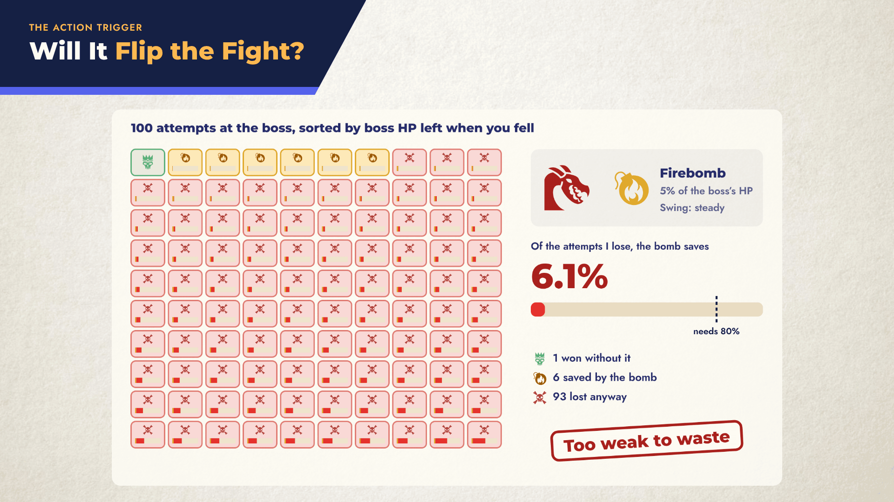
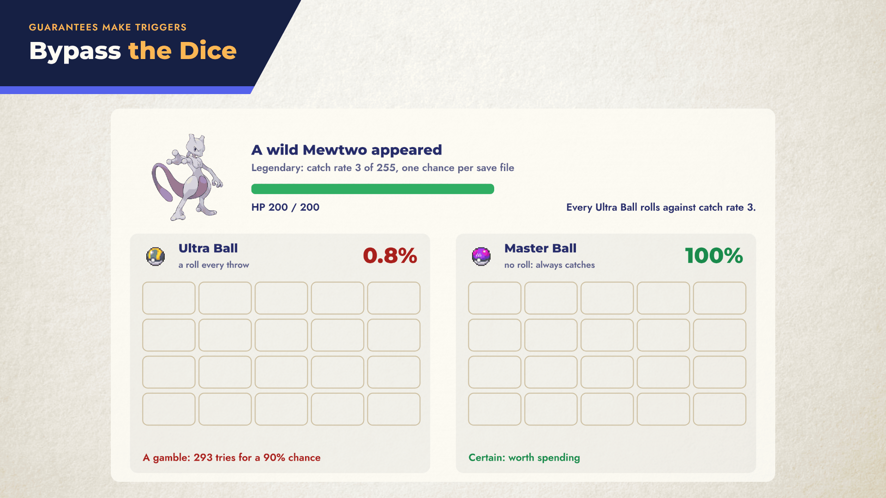
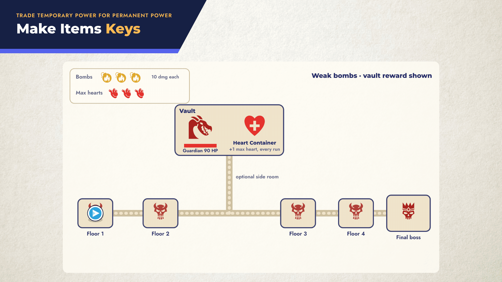

Interactive companions to game design blog posts. Each page takes one post’s key ideas and lets you pull the levers.
One page per post. Open one and use ← → to move through it.
1920×1080, looping. Right-click a GIF to save it, or open it full size.


